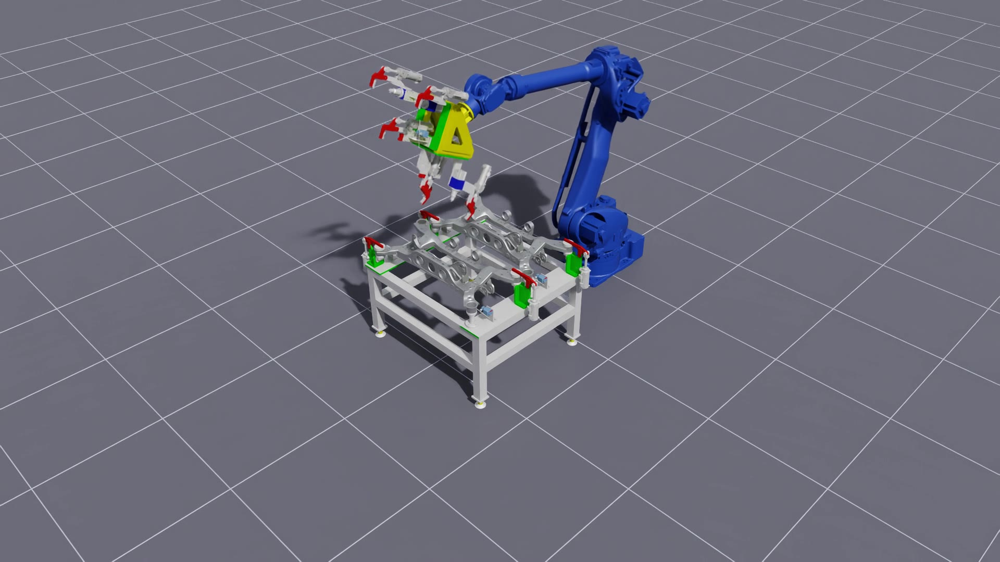

Digital Twin — Motoman MH180 Handling Robot#
INDUSTRY · AIROBOTICS Handling-robot digital twin · NVIDIA Isaac Sim
A physics-accurate digital twin of a Yaskawa Motoman MH180 handling robot, built in NVIDIA Isaac Sim. The arm is driven along precise Cartesian paths, teleoperated in real time, and made to pick and carry workpieces — all streamed live over WebRTC so the virtual robot can be operated from anywhere. It is the handling side of the airobotics Digital Twin program; the arc-welding side is a separate project.

Overview#
This project is the handling-robot digital twin in the airobotics program: a
Yaskawa Motoman MH180 (6-DOF, tool0 end-effector, with a physically welded gripper)
recreated in NVIDIA Isaac Sim 5.1. The goal is to plan, rehearse, and verify the
robot’s motion — precise path tracking, manual teleoperation, and pick-and-carry — in
simulation before anything touches real hardware, and to expose the virtual robot through
the same interfaces (a streamed viewport, on-stream interaction) an operator would use on
the shop floor.
Robot imported self-contained (USD + physics + base), painted Yaskawa blue. The gripper is welded to the flange under real physics, so the articulation is 24 DOF; the six arm joints are addressed by index.
Two motion strategies, matched to the job: Lula IK for precise path tracking, RMPflow for reactive, collision-aware transit and handling.
Precise trajectory execution (Lula IK)#
The accurate route densifies a Cartesian path (line, up/down, circle, or square), solves position IK per waypoint from the robot URDF, and replays the timed joint trajectory with smoothstep interpolation, looping continuously.
Verified path-tracking residual: mean ~0.0002 mm, max ~0.0006 mm — sub-micron tracking of the commanded path.
A key fix that made all IK correct: the USD tool0 frame sits 0.5 m out from the final
link but the URDF had a zero offset — the group_1_joint_6 → tool0 origin was corrected
to xyz="0.5 0 0".
Real-time teleoperation#
The gripper can be driven around the cell to reach a workpiece. Control is resolved-rate
(Jacobian damped-least-squares): the joints move proportionally to a small Cartesian
step each frame, so motion is smooth and can’t branch-flip (no ~180° wrist snaps),
tracking both translation and orientation. Because the operator gripper is tool_ee_2
(added under the gripper) while Lula only knows tool0, the teleop composes the fixed
tool0 → tool_ee_2 offset to control the real tool frame.
Drag-to-move follow target: a red cube the gripper tracks in full pose, dragged live over the WebRTC stream so the arm can be steered straight from a browser.
Full 3-axis orientation (roll/pitch/yaw) control via the same resolved-rate scheme:
Reach-to-target and pick-and-carry#
I added an RMPflow reach that drives Gripper 2 to a product center through two waypoints (0.5 m above, then the center), finished with a short Lula-IK “settle” because pure RMPflow stalls a few hundred mm short at the low pose. Verified final tool_ee_2 error 0.0001–0.0002 m.
Building on that, a pick-and-carry routine auto-drives to a product, closes the
gripper, and hands control to the user already carrying it. On grab it captures the fixed
tool_ee_2 → product transform and re-applies it every frame, so the product tracks the
gripper in full 6-DOF. Verified rigidity in self-test: 0.00000 m / 0.00000° drift — a
perfectly rigid carry.
Troubleshooting captured: a carried product first refused to move with the gripper on-stream even though a headless check reported near-zero follow error. Root cause: the products are kinematic rigid bodies, so the pose had to be driven explicitly each frame (and their colliders disabled so the gripper seats cleanly) rather than relying on a physics joint.
Live streaming (WebRTC over Tailscale)#
Every demo takes --stream to broadcast the viewport over WebRTC
(omni.services.livestream.nvcf, signalling port 49100), printing the host’s Tailscale
IP. A built-in browser viewer (vendoring NVIDIA’s omniverse-webrtc-streaming-library) or
the Isaac Sim WebRTC client connects from anywhere; resolution and FPS are tunable to
trade quality for bandwidth/latency. The robot keeps running while streaming. (Using
omni.services.livestream.nvcf rather than omni.kit.livestream.webrtc was itself a fix
— the latter produced an NVST_CCE_DISCONNECTED black screen.)
Scenes#
Minimal scene: the standard clean environment (dark ground + reference grid + dome/key lighting) with the blue MH180 + gripper and a single
LX3_RR_CMBR_W250jig in front of the robot.Full cell: the reconstructed cell with the MH180 handling robot(s) and jig/workpiece assemblies in their correct positions.
Tech stack#
Simulation: NVIDIA Isaac Sim 5.1, USD, PhysX
Kinematics / motion: Lula IK, RMPflow, resolved-rate (Jacobian DLS) control
Robot: Yaskawa Motoman MH180 (handling, 6-DOF) + welded gripper
Streaming: WebRTC (
omni.services.livestream.nvcf) over Tailscale, browser viewerLanguage: Python